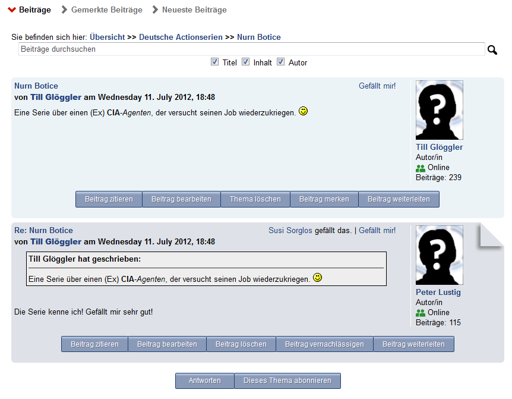

Erstellen eines neuen Beitrags mit Smiley-Favoriten und Vorschau

Das Thema mit Antwort
Schließen
Features
Grunlegendes Konzept
Das Forum hat 3 Hierarchieebenen + 1 Metaebene:
Es gibt sog. "Bereiche", in denen die einzelnen Themen und darin die Postings enthalten sind.
Außerdem können die Bereiche in "Kategorien" zusammengefasst werden.
Standardmäßig befinden sich alle Bereich in der vordefinierten Kategorie "Allgemeines"
Funktionsliste
Erstellen/Löschen/Bearbeiten einer Kategorie (bis auf die Standardkategorie "Allgemeines")
Erstellen/Löschen/Bearbeiten eines Bereiches
Drag'n'Drop zum sortieren von Bereichen und Kategorien
Erstellen/Löschen eines Themas
Bearbeiten eines Postings
Anworten auf ein Thema
Zitieren aus einem Posting
Löschen eines Postings
+1 / -1 (Gefällt mir / Gefällt mir nicht mehr) für ein Posting
Ein Posting als Favoriten markieren
neue Beiträge - zeigt Beiträge, die seit meinem letzten Besuch dazugekommen sind, neuester zuerst
letzte Beiträge - zeigt alle Beiträge in chronologischer Reihenfolge, neueste zuerst
Suchen innerhalb aller Beiträge und "highlight" der Suchergebnisse in einer Trefferliste
Direktes Springen zum neuesten Beitrage eines Bereichs / eines Themas
Anzalh der bereits Sysmteweit verfassten Beiträge wird bei Nutzerinfos bei den Postings angezeigt.
Changelog
Version 2.0.32
Feature: Neue Rotfärbelogik: Orientiert sich nun am Datum des letzten betretens der Veranstaltung und verhält sich damit analog zum alten Forum.
Feature: Auch bei den Posting-Listen sind nun ausgewählte Aktionen verfügbar (Antworten/Zitieren folgt später)
Bugfix: Leere Titel führten zu einem unnötigen Doppelpfeil, wenn der Pfad zu einem Posting angezeigt wird
Bugfix: Gemerkte Beiträge wurden nicht korrekt erkannt
Version 2.0.31
Anpassung an neue Sem-Klassen-API der 2.4
Feature: Tour durch die Funktionen auf der Haupseite (dank Joyride, ein jQuery-Plugin)
Version 2.0.30
Feature: Das Forum integriert sich nun in die neue "alles als gelesen markieren"-Funktionalität von Stud.IP
Version 2.0.29
Bugfix: Beiträge in der Suchansicht und bei den gemerkten Beiträgen erhalten kein rotes Icon mehr
Bugfix: Icon färbt sich nicht mehr rot bei eigenen Beiträgen und zeigt nun auch sets korrekte Werte an
Feature: Seit dem letzen betreten der VA hinzugekommene Beiträge werden rot markiert
Version 2.0.28
Bugfix: Debug-Code im JavaScript entfernt
Bugfix: Scrollen nach Klick auf "Beitrag zitieren" funktioniert nun auch im Chrome und Safari
Version 2.0.27
Bugfix: Rotfärbung der Icons berücksichtigt nun auch korrekt die Unterbereiche/-themen
Verwenden des Caches für die ansonsten langsame Darstellung der roten Icons
Version 2.0.26
Bugfix: Icons färbten sich auf seltsame Weise manchmal unsinnigerweise rot, das tun sie nun nicht mehr
Verbesserungen für die Funktion "Beitrag weiterleiten"
Version 2.0.25
Bugfix: Infobox verschwindet jetzt nur noch im Forum
Bugfix: Blättern in der Suche funktioniert nun (wieder)
Einige kleinere Anpassungen und Fehlerbehebungen
Version 2.0.24
Bugfix: Springen zu einer Seite die es nicht gibt führt nun nicht mehr zu einem Fehler. Es
wird stattdessen auf die letzte Seite des Themas / der Liste gesprungen
Version 2.0.23
Feature: Beiträge können nun als interne Nachricht weitergeleitet werden
Bugfix: Interne Nachrichten über neue Beiträge werden auch dann als E-Mail weitergeleitet,
wenn in den Einstellungen "nur, wenn vom Absender gewünscht" ausgewählt ist und der Ersteller
des Beitrages erhält keine Nachricht mehr.
Bugfix: Beitrag weiterleiten wird nun über ein form-post gelöst. Schickt man die Nachricht ab oder klickt
auf Abbrechen, landet man wieder im Forum beim Beitrag.
Version 2.0.22
Feature: Zusammenfassen der Re:-Angaben im Titel bei Zitaten durch Re^x
Version 2.0.21
Bugfix: Nach dem Anlegen einer neuen Kategorie mittels Anker zu dieser springen
Version 2.0.20
Bugfix: Klicken auf ein Thema führt nun zum letzten ungelesen Beitrag
Verbesserungen und Bugfixes für die Benachrichtigung über neue Inhalte (Rotfärbung der Icons)
Version 2.0.19
Feature: Bereich können nun einen maximal 2 Zeilen langen Infotext haben
Feature: Media-queries für das Stylesheet: Wird das Browserfenster schmaler als ein Fixwert,
wird die Infobox ausgeblendet und die Suchleiste am Anfang der Seite angezeigt.
Der Abo-Link ist nun ein Button am Ende der Themenliste / der Beitragsliste
Version 2.0.18
Feature: Abonnieren von Bereichen / Themen. Dafür wurde ein experimenteller Bulk-Mailer hinzugefügt,
um Performance-Probleme beim versenden der Mails nach erstellen eines Beitrags zu minimieren.